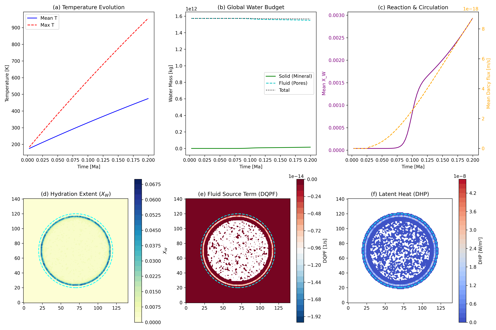
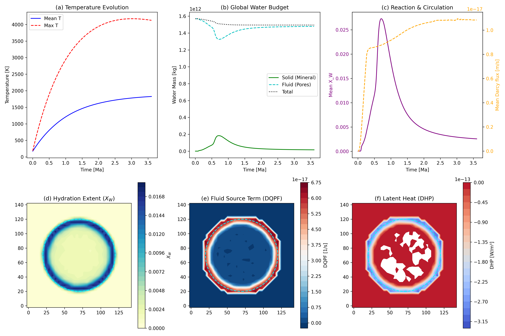

Hydrothermal Reactions
This page validates the fully coupled hydro-thermo-chemical module in Erebus.jl. The model integrates multi-phase fluid flow, thermal evolution (including latent heat), and the kinetics of hydration and dehydration reactions.
2D Hydrothermal Benchmark
To isolate the effects of hydrothermal reactions and fluid circulation on the global water budget, we initialize a 2D planetesimal (50 km radius) composed of anhydrous rock and pore ice (porosity $\phi = 0.2$). The planetesimal is heated by short-lived radionuclides, which melts the ice and drives hydrothermal circulation.
As the interior heats up, hydration reactions consume pore fluid to produce hydrated minerals. The benchmark verifies:
- Reaction Kinetics: The hydration and dehydration fronts propagate correctly according to the Arrhenius kinetic model (
hydration_mode = 1,dehydration_mode = 2). - Latent Heat (
DHP): The release of heat during hydration (exothermic) and absorption during dehydration (endothermic). - Mass Conservation: The exchange of water mass between the fluid (pore) phase and the solid (mineral) phase, diagnosed via the fluid source term
DQPF.
128x128 High-Resolution Results
The following fields demonstrate the state of the planetesimal after internal heating has driven widespread hydration.

- (a) Temperature Evolution: The mean and maximum temperatures rise rapidly due to radiogenic heating, before relaxing as heat conducts outward.
- (b) Global Water Budget: The total water mass is conserved. Water transitions from the fluid phase (pores) to the solid phase (hydrated minerals) as the hydration front moves inward.
- (c) Reaction & Circulation: Mean fluid circulation (Darcy flux $|q|$) peaks during the main hydration phase.
- (d) Hydration Extent ($X_W$): A fully hydrated outer shell forms, while the inner core remains anhydrous due to high temperatures preventing hydration.
- (e) Fluid Source Term (DQPF): Active regions of fluid consumption (hydration) and production (dehydration).
- (f) Latent Heat (DHP): The corresponding thermal feedback from the reaction fronts.
32x32 Low-Resolution Comparison
For rapid testing and continuous integration, we also provide a 32x32 benchmark. Despite the coarser grid, it captures the same macroscopic physical behavior and mass conservation constraints.

Configurations
The benchmark configurations can be found in configs/:
hydrothermal_reaction_on_128.toml(Coupled, high-resolution)hydrothermal_reaction_on_32.toml(Coupled, low-resolution)hydrothermal_reaction_off_32.toml(Baseline, reactions disabled)